@article{liu2026reca,
title = {ReCA: Multi-Shot Long Video Extrapolation via Recursive Context Allocation},
author = {Liu, Akide and Xing, Jinbo and Mao, Chaojie and Li, Ye and
Zhang, Zeyu and He, Yefei and Wang, Weijie and Wang, Zihan and
Liu, Yu and Haffari, Gholamreza and Zhuang, Bohan},
journal = {arXiv preprint arXiv:2605.26525},
year = {2026},
eprint = {2605.26525},
archivePrefix = {arXiv},
primaryClass = {cs.CV},
url = {https://arxiv.org/abs/2605.26525}
}
ATAS: Any Time, Any Space: A World-State-Centric Framework for Agentic Video Generation
Best average on Wan 3.0, MiniMax-H3, Wan 2.7, and HappyHorse 1.0
Spatial revisit
15.968
PSNRC, above every agent and both 3D-guided view-synthesis methods
Event recapture
0.650
Viewpoint score; ReCA 0.500
Memory ablation
0.452 → 0.739
Recapture score from no memory to the full state
Human rating
4.40 / 5
Script faithfulness; ATAS is highest on all six criteria
01
Abstract
Long-form agentic video generation must turn a screenplay into shots that remain spatially and temporally consistent across nonconsecutive requests. Passing prompts or recent frames between shots does not provide a shared spatial frame for revisiting a scene or a time-indexed record for replaying an earlier event. We present Any Time, Any Space (ATAS), which compiles a screenplay into shot requests with explicit location, camera, and event-time references. Before generation, it retrieves relevant evidence from a scene memory of registered static geometry and an event memory of dynamic observations indexed by scene, event, and time. After generation, ATAS reconstructs and registers the clip. It updates memory only when review and state checks accept the observation, while film delivery remains independent of memory admission. Across four video generators, ATAS improves all reported cross-shot consistency measures and achieves the highest aggregate benchmark score for each backbone. It also outperforms the compared agents and 3D-guided methods on target-image spatial revisit, leads three event-recapture criteria, and receives the highest human ratings on all six criteria.
02
Pipeline Overview
ATAS turns a high-level screenplay into short video shots while keeping the spatial and temporal evidence that later shots need. The central object is a persistent world state, which is queried before each shot and updated by observations that pass validation. Figure 2 shows the workflow in three parts: world-state compilation, video synthesis and validation, and a two-stage memory that holds static point clouds for different scenes and dynamic point clouds for specific events.
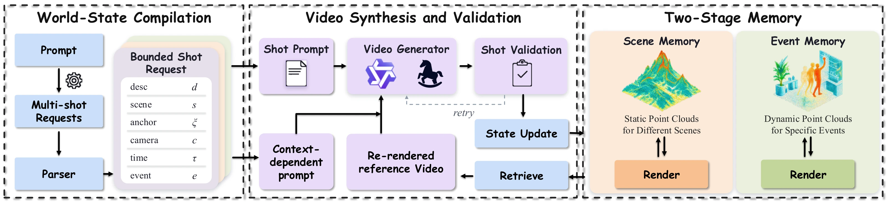
Fig. 2Workflow of ATAS. A high-level prompt is parsed into multi-shot requests and bounded shot requests.
Each bounded request in Figure 2 carries a local description, a scene, a spatial anchor, a camera, a time interval, and an optional event. The description becomes the shot prompt. The scene field selects a re-rendered point-cloud reference from scene memory, the event field retrieves dynamic references from event memory, and the two together form the context-dependent prompt for the video generator. Shot validation then either asks for another candidate or sends the accepted observation to the state update, and the next request reads the updated state. A generated shot stays in the film whether or not its observation is added to the persistent state.
03
Core Components
Scene and event evidence are kept apart because they have different persistence requirements: static geometry is registered once to a scene coordinate frame and can be rendered at a new camera, whereas dynamic evidence must remain bound to an event and a time interval. Figures A and B trace the compiler and both memories, and Table E reports how the memory grows.
World-state compiler
Recursively splits the screenplay until each request fits the short-video generation budget, and waits for each validated observation before deciding which state a subsequent request may use.
Scene memory
Accepted static geometry registered in the scene coordinate frame, with dynamic regions excluded. A request recovers a previously observed space by rendering it at the requested camera.
Event memory
Time-local dynamic evidence, with registered frame-level RGB-D, masks, and dynamic point clouds, indexed by scene, event identity, source observation, and source interval.
Validation and state update
Film delivery, registration, and admission to persistent state are separate decisions, so a clip can remain in the film without becoming evidence for later requests.
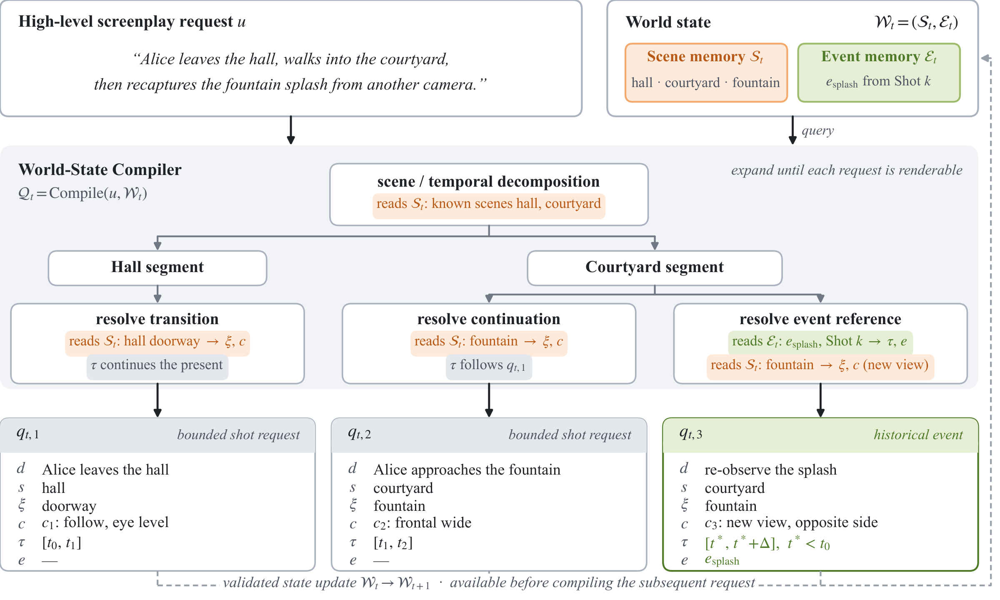
Fig. ARecursive screenplay compilation. The compiler turns a high-level request into bounded shot requests and uses validated state updates to condition subsequent requests.
The trace in Figure A starts from one screenplay request: Alice leaves the hall, walks into the courtyard, and the earlier fountain splash is then recaptured from another camera. The compiler splits it into three bounded requests (leaving the hall, approaching the fountain, and re-observing the splash), and each one reads the world state to fill in its spatial anchor and camera. The third request also carries the splash event and its earlier source interval, which is what lets dynamic evidence be selected for the recapture. All of this is resolved before any video is rendered, and every later request reads the validated state left by the earlier ones.
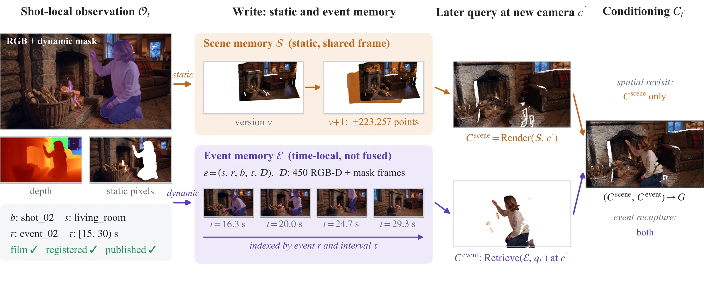
Fig. BScene and event memory. The figure follows one accepted shot-local observation as static evidence is written to scene memory and dynamic evidence is indexed in event memory, then shows how both references condition a later camera request.
Figure B traces what happens to one accepted shot. Its static pixels are registered into the shared scene frame and extend the scene memory, while its dynamic frames and masks become a separate event record, indexed by event and source interval and kept unfused with the scene. A later request at a new camera uses only the scene render for a spatial revisit, and both the scene render and the retrieved event record for an event recapture. Keeping the two kinds of evidence apart prevents a visually similar frame from being retrieved when it belongs to the wrong occurrence.
Tab. EMemory statistics. This analysis table reports memory growth and query cost at rollout checkpoints. It is not a sample manifest.
Checkpoint
Scene size (×106)
Event records
Storage (GB)
Query and update time (s)
Processed shots
Initial state
33.54
1.0
0.95
93.0
1.2
After accepted update
40.92
2.1
1.38
97.8
2.8
End of rollout
49.60
4.8
2.44
103.5
6.9
04
Experimental Setup
The experiments test whether a persistent scene and event state improves multi-shot continuity, and separate this effect from memory contents, agent components, delivery cost, and human perception. Tables A–D break each standard benchmark into its individual metrics for ATAS on the four backbones.
Standard benchmarks
Official inputs and evaluators of VBench, ST-Bench, ViStory-Self, and ViStory-Cross on MiniMax-H3, Wan 2.7, HappyHorse 1.0, and Wan 3.0, against I2V Extension, VGoT, Mora, MovieAgent, and ReCA.
Spatial revisit
The return view after intervening requests is compared with a target image using PSNRC, SSIMC, and LPIPSC under a common-visibility mask.
Event recapture
Source-grounded: one fixed VLM judge scores event identity, action and state, temporal order, character and object consistency, and viewpoint realization, with no synchronized target video.
Controlled comparisons
State contents and agent components are varied separately under fixed generation conditions, followed by sensitivity tests on capacity, update frequency, freshness, and the state update check.
Tab. AVBench dimension breakdown. Each row is one reported VBench dimension, and each method/backbone column uses the official VBench evaluator and prompt suite.
Dimension
Wan 2.7 ATAS
Wan 3.0 ATAS
MiniMax-H3 ATAS
HappyHorse ATAS
Aesthetic quality
0.6387
0.6731
0.6945
0.6792
Subject consistency
0.9481
0.9643
0.9576
0.9418
Background consistency
0.9554
0.9717
0.9680
0.9522
Temporal flickering
0.9932
0.9863
0.9847
0.9884
Motion smoothness
0.9888
0.9766
0.9714
0.9795
Dynamic degree
0.5488
0.6882
0.5842
0.6314
Tab. BST-Bench metric breakdown. The table reports official scores for aesthetic quality, global and single-shot prompt following, all-pair cross-shot consistency, and top-ten-pair cross-shot consistency.
Metric
Wan 2.7 ATAS
Wan 3.0 ATAS
MiniMax-H3 ATAS
HappyHorse ATAS
ReCA reference
Aesthetic
0.6387
0.6731
0.6945
0.6792
0.6517
PF-G
0.2174
0.2415
0.2351
0.2289
0.2216
PF-S
0.2154
0.2362
0.2308
0.2243
0.2192
C-All
0.5977
0.6844
0.6529
0.6615
0.5751
C-Top10
0.6253
0.7187
0.6908
0.6684
0.6015
Tab. CViStory-Self metric breakdown. Rows report the supplied within-story consistency dimensions and aggregate.
Metric
Wan 2.7 ATAS
Wan 3.0 ATAS
MiniMax-H3 ATAS
HappyHorse ATAS
ReCA reference
Identity consistency
0.5494
0.6617
0.6421
0.5974
0.5608
Appearance consistency
0.6836
0.8139
0.7476
0.7772
0.7034
Temporal self-consistency
0.7648
0.7908
0.7392
0.7425
0.7186
Aggregate
0.6659
0.7555
0.7096
0.7057
0.6609
Tab. DViStory-Cross metric breakdown. Rows report the supplied cross-shot consistency dimensions and aggregate.
Metric
Wan 2.7 ATAS
Wan 3.0 ATAS
MiniMax-H3 ATAS
HappyHorse ATAS
ReCA reference
Cross-shot identity
0.5073
0.5992
0.5736
0.5428
0.4934
Cross-shot appearance
0.4871
0.5806
0.5392
0.5618
0.5013
Cross-shot scene consistency
0.4621
0.5729
0.5285
0.5138
0.4484
Aggregate
0.4855
0.5842
0.5471
0.5395
0.4810
05
Quantitative Results
Table 1 compares ATAS with I2V Extension, VGoT, Mora, MovieAgent, and ReCA on four standard benchmarks and four rendering backbones; within a block, every method shares the generator, prompt package, duration budget, and evaluation protocol. VBench reflects local rendering quality, while ST-Bench, ViStory-Self, and ViStory-Cross measure consistency across shots. ATAS has the best average on every backbone, and its clearest advantage is on the cross-shot measures. Figure 3 shows how accepted observations extend the scene and event state across intervening shots.
Tab. 1Agent-level quantitative evaluation on standard benchmarks. Models are grouped by source type and rendering backbone. Methods within a block share the generator, prompt package, duration budget, and evaluation protocol. Bold and underlined entries mark the best and second-best values within each backbone block.
Model
Method
VBench
ST-Bench
ViStory-Self
ViStory-Cross
Avg.
Open-Source Models
MiniMax-H3
I2V Extension
0.828±0.013
0.572±0.020
0.601±0.028
0.418±0.027
0.605
VGoT
0.834±0.014
0.612±0.017
0.638±0.023
0.468±0.030
0.638
Mora
0.836±0.012
0.598±0.019
0.628±0.026
0.452±0.024
0.628
MovieAgent
0.852±0.012
0.608±0.016
0.642±0.025
0.476±0.023
0.644
ReCA
0.844±0.011
0.628±0.018
0.658±0.021
0.508±0.022
0.659
ATAS
0.860±0.010
0.691±0.014
0.710±0.020
0.547±0.021
0.702
Proprietary Models
Wan 2.7
I2V Extension
0.778±0.014
0.486±0.022
0.512±0.029
0.348±0.031
0.531
VGoT
0.786±0.011
0.536±0.019
0.564±0.026
0.412±0.028
0.575
Mora
0.791±0.015
0.528±0.017
0.558±0.031
0.388±0.033
0.566
MovieAgent
0.808±0.013
0.542±0.021
0.572±0.024
0.402±0.026
0.581
ReCA
0.854±0.009
0.568±0.018
0.598±0.022
0.428±0.029
0.612
ATAS
0.846±0.012
0.625±0.016
0.666±0.021
0.486±0.032
0.656
HappyHorse 1.0
I2V Extension
0.836±0.012
0.558±0.023
0.592±0.029
0.408±0.031
0.599
VGoT
0.822±0.014
0.588±0.018
0.628±0.025
0.458±0.027
0.624
Mora
0.824±0.011
0.574±0.020
0.618±0.027
0.442±0.026
0.614
MovieAgent
0.856±0.013
0.598±0.016
0.648±0.021
0.472±0.024
0.643
ReCA
0.841±0.010
0.621±0.019
0.668±0.024
0.496±0.025
0.656
ATAS
0.862±0.009
0.668±0.015
0.706±0.019
0.540±0.030
0.694
Wan 3.0
I2V Extension
0.836±0.013
0.548±0.021
0.582±0.027
0.401±0.030
0.592
VGoT
0.834±0.010
0.571±0.019
0.622±0.024
0.461±0.026
0.622
Mora
0.838±0.012
0.562±0.023
0.614±0.022
0.438±0.031
0.613
MovieAgent
0.858±0.011
0.578±0.018
0.628±0.025
0.452±0.024
0.629
ReCA
0.848±0.009
0.602±0.017
0.661±0.020
0.481±0.027
0.648
ATAS
0.877±0.011
0.719±0.015
0.756±0.019
0.584±0.028
0.734
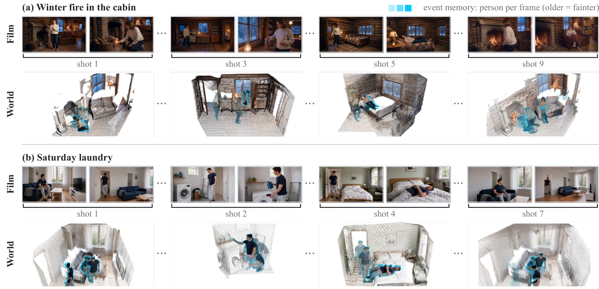
Fig. 3Qualitative world-state rollout. Film frames and registered world views are shown for two story sequences.
Figure 3 stacks two stories, Winter Fire in the Cabin above and Saturday Laundry below; in each, the upper row is the film and the lower row the registered world view at the same shot. In both stories the character comes back to a place seen earlier, after other shots have intervened. The return frames keep the earlier scene layout and object state, and the world views tie each return to the spatial evidence accumulated during generation. Event memory appears in the world views as the person in each stored frame, with older frames drawn fainter.
Multi-shot benchmarks
0.734 average on Wan 3.0
ATAS leads every aggregate on MiniMax-H3, HappyHorse 1.0, and Wan 3.0, with averages of 0.702, 0.694, and 0.734 against 0.659, 0.656, and 0.648 for ReCA.
Wan 2.7
0.656 against 0.612 average
ATAS gives up the local VBench lead to ReCA (0.846 against 0.854) but remains ahead on ST-Bench and both ViStory consistency measures.
Cross-shot consistency
0.719 / 0.756 / 0.584
ST-Bench, ViStory-Self, and ViStory-Cross on Wan 3.0, against 0.602, 0.661, and 0.481 for ReCA.
06
Spatial Revisit and Event Recapture
Two targeted protocols test the persistence queries directly. A spatial revisit returns to an earlier location after intervening requests and is scored against a target image at the prescribed return camera. A historical event recapture shows an earlier event again from a requested camera and is scored against the source-event evidence, since no synchronized target video is used. Figure 4 shows matched examples with one row per method.
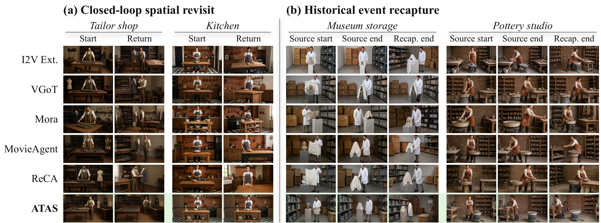
Fig. 4Spatial revisit and historical event recapture. The top row uses a target image for spatial comparison. The bottom row uses source-grounded event evidence under a requested camera.
The left half of Figure 4 is spatial revisit in a tailor shop and a kitchen, with the start view and the generated return view for each method. The right half is event recapture in a museum storage room and a pottery studio, where the start and end frames of the source event sit next to the end of the recaptured clip. With registered scene geometry, ATAS has the strongest return-view agreement and the best value on all three measures in Table 2, which supports a shared scene frame for revisits. In Table 3 it leads event identity, temporal order, and viewpoint realization, while ReCA is slightly higher on action and state. ATAS therefore retrieves the requested occurrence and viewpoint more reliably than the baselines, and exact action-state reproduction remains the main difficulty.
Tab. 2Spatial revisit. Agent-based and 3D-guided methods are evaluated against target images under a common-visibility mask, with ATAS shown separately.
Method
PSNRC
SSIMC
LPIPSC
I2V Extension
13.601
0.293
0.339
VGoT
14.444
0.313
0.300
Mora
13.796
0.318
0.288
MovieAgent
14.543
0.352
0.296
ReCA
13.870
0.268
0.306
FlexWorld
14.740
0.343
0.315
ViewCrafter
15.255
0.375
0.293
ATAS
15.968
0.385
0.284
Tab. 3Source-grounded event recapture. Five criteria assess event identity, action and state, temporal order, character and object consistency, and viewpoint realization against source-event evidence and the requested camera. No synchronized target video is used. Scores are averaged across criteria and event requests.
Method
Event id.
Action state
Temporal order
Char. object
View realization
I2V Extension
0.450
0.433
0.433
0.817
0.200
VGoT
0.517
0.533
0.400
0.850
0.400
Mora
0.286
0.339
0.357
0.768
0.250
MovieAgent
0.500
0.450
0.500
0.783
0.350
ReCA
0.733
0.700
0.617
0.917
0.500
ATAS
0.750
0.688
0.688
0.917
0.650
Spatial revisit
15.968 PSNRC
Best on all three measures, with 0.385 SSIMC and 0.284 LPIPSC; ViewCrafter reaches 15.255 and the best other agent 14.543.
Event recapture
0.750 / 0.688 / 0.650
ATAS leads event identity, temporal order, and viewpoint realization; ReCA is slightly stronger on action and state (0.700 against 0.688).
Character and object
0.917, tied with ReCA
Exact action-state reproduction remains the main residual difficulty of event recapture.
07
Human Evaluation
Human raters compare I2V Extension, VGoT, Mora, MovieAgent, ReCA, and ATAS under one shared, anonymized protocol, using the criteria of ReCA: visual appeal, script faithfulness, character consistency, background consistency, physical law, and narrative coherence. Each long video is watched as a whole and scored on every criterion from 1 to 5 with the method identity hidden (Figure F). Figure G shows the distribution of ratings, and Figure H compares the automatic diagnostics with human ratings on matched clips.
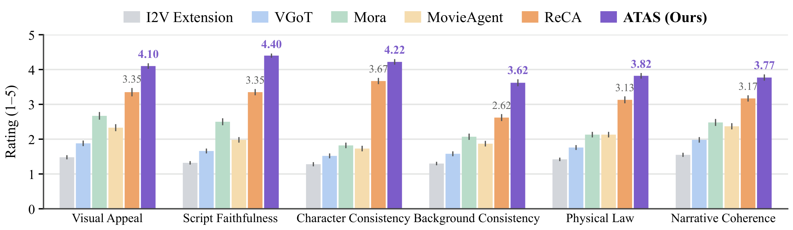
Fig. 5Human evaluation of agent methods. Grouped bars show mean ratings and standard-error whiskers for six methods across six criteria.
Each group of bars in Figure 5 is one criterion, and ATAS has the highest mean in every group. Its means are highest for script faithfulness (4.40), character consistency (4.22), and visual appeal (4.10), and lowest for background consistency (3.62) and narrative coherence (3.77). Raters therefore see most clearly that the shots follow the script and that characters carry over between shots. Consistency of the whole environment and coherence of the full story are less resolved.
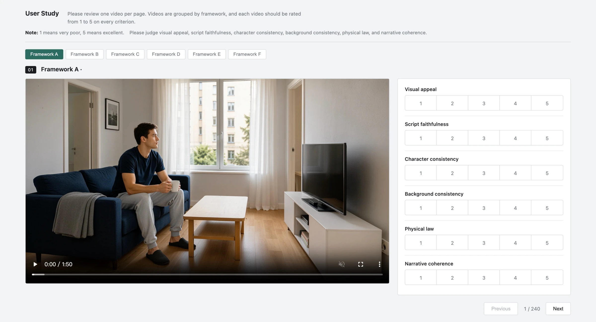
Fig. FHuman evaluation interface. Each page shows one anonymized long video with its story title and synopsis.
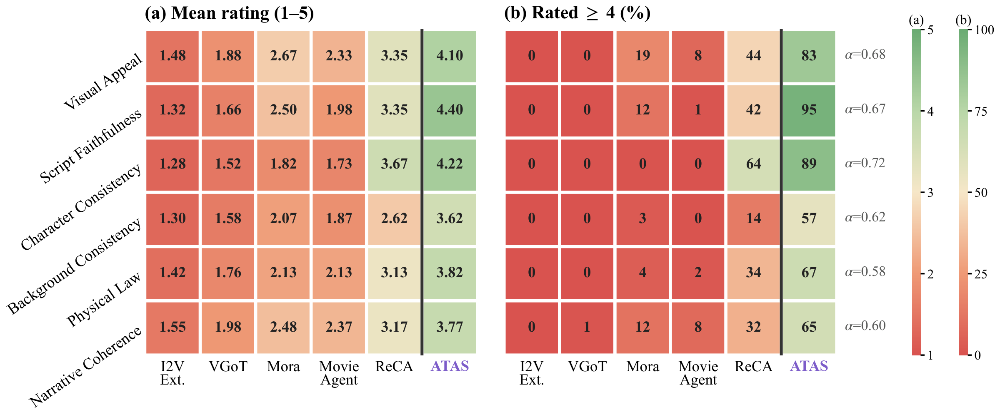
Fig. GDistribution of human judgments. The heatmaps report mean ratings and the fraction of ratings at least four for each criterion and method. The side panel summarizes inter-rater agreement.
Figure F is the page a rater sees: one anonymized long video, rated as a whole, so the consistency criteria cover the complete film. Figure G breaks the same ratings down by criterion and method, with mean ratings in the left heatmap, the share of ratings of at least four in the right heatmap, and the inter-rater agreement of each criterion at the side. ATAS reaches 57% to 95% ratings of at least four across criteria, against 14% to 64% for ReCA, the strongest baseline. Agreement coefficients range from 0.58 to 0.72, so the ordering does not rest on a criterion with unusually unstable ratings. Physical law and narrative coherence remain harder than script faithfulness and character consistency.
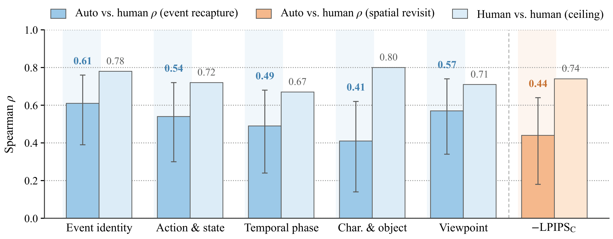
Fig. HAutomatic-to-human agreement. Spearman correlations compare the event-recapture and spatial-revisit diagnostics with human ratings on matched clips, alongside the human–human agreement ceiling.
Figure H measures how well the automatic diagnostics agree with human ratings on matched clips. The Spearman correlation is 0.61 for event identity, 0.54 for action and state, 0.49 for temporal phase, 0.41 for character and object, and 0.57 for viewpoint, and the spatial diagnostic, negated LPIPSC, reaches 0.44. The human–human ceilings are higher, from 0.67 to 0.80, which leaves room for evaluator noise and for aspects of perception that the scores do not capture. The automatic scores are useful as structured diagnostics, and human judgment is still needed alongside them.
Mean ratings
3.62 to 4.40
ATAS has the highest mean rating on all six criteria; ReCA, the strongest baseline, ranges from 2.62 to 3.67.
Ratings of at least four
57% to 95%
The share for ATAS across criteria, against 14% to 64% for ReCA; agreement coefficients range from 0.58 to 0.72.
Automatic and human
0.41 to 0.61
Spearman correlation of the event-recapture axes with human ratings, below the human–human ceilings of 0.67 to 0.80.
08
Ablation and Analysis
The controlled studies separate the contribution of agent components from that of memory contents, using the Wan 3.0 backbone with the prompts, cameras, candidate budget, and retry policy fixed. Table 4 adds agent components cumulatively, and Table 5 changes only what the memory contains. Figure 6 measures what the state costs across the same six memory settings: persistent memory reduces retry demand at a measurable compute cost. Figures C–E vary memory capacity, update frequency, memory freshness, and the strictness of the state update check, each next to the table that supplies its values.
Tab. 4Agent-component ablation. All rows use Wan 3.0 and the same requests, cameras, candidate budget, and retry policy.
Configuration
ViStory average ↑
C-Top10 ↑
LPIPSC ↓
Event Recapture Score ↑
ATAS w/ shot rendering
0.478
0.528
0.341
0.441
ATAS w/ scene and event resolution
0.612
0.568
0.334
0.508
ATAS w/ recursive compilation
0.638
0.684
0.288
0.711
ATAS w/ observation validation
0.651
0.702
0.286
0.726
ATAS w/ state update check
0.670
0.719
0.284
0.739
Tab. 5Memory analysis. ATAS with Wan 3.0 is fixed. Rows vary stored evidence and state checks.
Config.
C-Top10 ↑
LPIPSC ↓
Recap. ↑
ATAS w/o memory
0.536
0.341
0.452
ATAS w/ frame history
0.598
0.319
0.548
ATAS w/ static scene
0.617
0.289
0.583
ATAS w/ updated scene
0.658
0.286
0.585
ATAS w/ scene + event
0.703
0.285
0.728
ATAS w/ full state
0.719
0.284
0.739
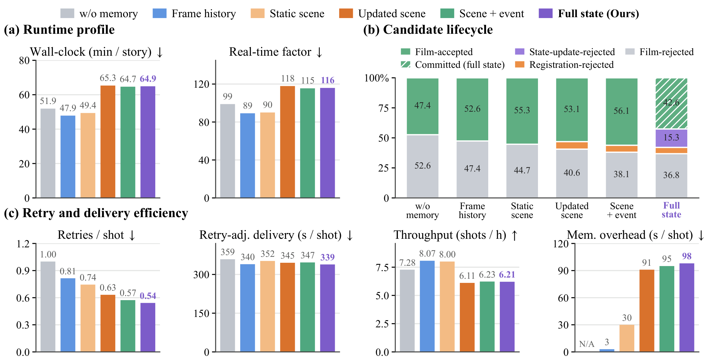
Fig. 6Efficiency comparison across memory settings. Panels (a), (b), and (c) show runtime, candidate lifecycle, and retry and delivery measures across six memory settings.
Each panel of Figure 6 orders the six memory settings from no memory to the full state. In panel (a), per-story wall-clock time rises from 51.9 to 64.9 minutes. In panel (b), the share of candidates rejected at film review falls at every step, from 52.6% to 36.8%, so the improvement already appears in the intermediate settings. In panel (c), retries drop from 1.00 to 0.54 per shot and retry-adjusted delivery time from 359 to 339 seconds per shot, while throughput falls from 7.28 to 6.21 shots per hour and memory overhead reaches 98 seconds per shot. The state pays for fewer retries and faster retry-adjusted delivery with a measurable amount of extra compute.
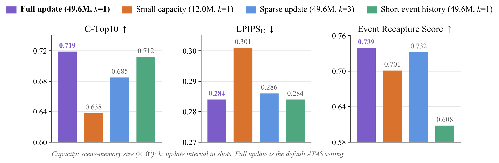
Fig. CMemory capacity and update sensitivity. The figure shows whether quality gains require additional state size or frequent updates.
Tab. FMemory capacity and update sensitivity. The table supplies the values used by Fig. C.
Configuration
Capacity (×106)
Update interval
C-Top10
LPIPSC
Event score
Full update
49.60
1
0.719
0.284
0.739
Sparse update
49.60
3
0.685
0.286
0.732
Small capacity
12.00
1
0.638
0.301
0.701
Short event history
49.60
1
0.712
0.284
0.608
Figure C and Table F change one property of the full update setting at a time. Updating only every third shot lowers C-Top10 from 0.719 to 0.685 and the event score from 0.739 to 0.732. Shrinking the scene capacity from 49.60 to 12.00 million units has the largest spatial effect, with C-Top10 at 0.638 and LPIPSC at 0.301. Shortening the event history leaves LPIPSC at 0.284 but cuts the event score to 0.608. Update frequency, scene capacity, and event history therefore act as separate controls: frequent updates cannot make up for a much smaller scene store, and a large scene store cannot replace missing event history.
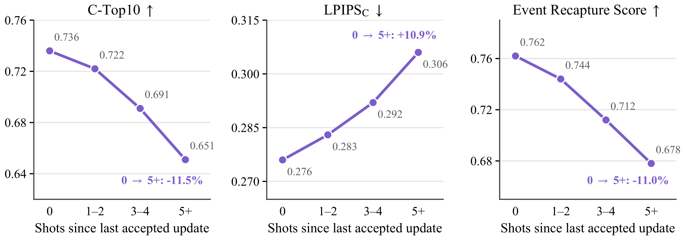
Fig. DMemory freshness and staleness. The figure tests whether quality degrades as future requests operate farther from the most recent accepted observation.
Tab. GMemory freshness data. The table supplies the values used by Fig. D.
Shots since update
C-Top10
LPIPSC
Event Recapture Score
0
0.736
0.276
0.762
1 to 2
0.722
0.283
0.744
3 to 4
0.691
0.292
0.712
5+
0.651
0.306
0.678
Figure D and Table G group requests by how many shots have passed since the last accepted update. All three measures get worse with distance: from zero to five or more intervening shots, C-Top10 falls from 0.736 to 0.651, LPIPSC rises from 0.276 to 0.306, and the event score falls from 0.762 to 0.678. The decline is gradual across the bins, so a stale state loses its usefulness step by step, with no single horizon at which it fails. The bins do not show whether the loss comes from scene changes, event density, or accumulated registration error.
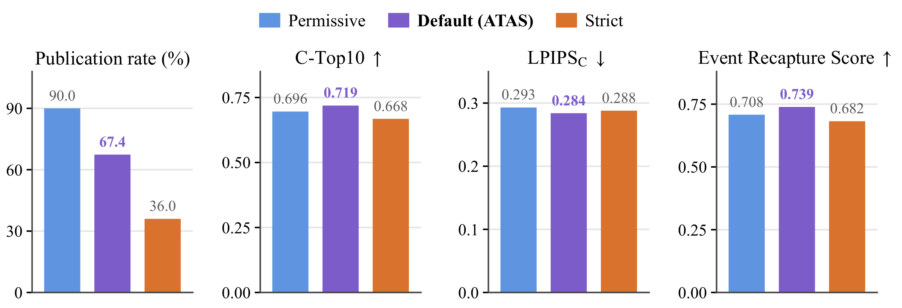
Fig. EState update check trade-off. The figure shows how stricter admission changes state coverage and downstream quality.
Tab. HState update check sensitivity. The table supplies the values used by Fig. E. It reports no independent benchmark.
State update setting
State update rate
C-Top10
LPIPSC
Event score
Permissive
90.0
0.696
0.293
0.708
Default
67.4
0.719
0.284
0.739
Strict
36.0
0.668
0.288
0.682
Figure E and Table H vary how strict the state update check is. The permissive setting admits 90.0% of candidate updates and the strict setting only 36.0%, and both lose quality, with C-Top10 at 0.696 and 0.668 and event scores at 0.708 and 0.682. The default setting admits 67.4% and is best on all three measures, with 0.719 C-Top10, 0.284 LPIPSC, and a 0.739 event score. Admitting too much and rejecting too much can both reduce the evidence available to later requests. The result supports the check as a controlled admission step and does not show that the default threshold is optimal in general.
Event memory
0.585 → 0.728
Adding event memory to the updated scene gives the largest change in the event recapture score.
Recursive compilation
0.508 → 0.711
The largest subsequent improvement in the component study, with C-Top10 rising from 0.568 to 0.684.
State update check
67.4% admitted
The default setting gives the strongest downstream scores; permissive (90.0%) and strict (36.0%) admission both lose quality.
09
Qualitative Results
Figure I compares the methods on matched frames from a record shop and a bakery, Figure K shows timestamped frames from six stories, and Figure J follows one rollout through scene changes, a spatial revisit, and an event recapture request.
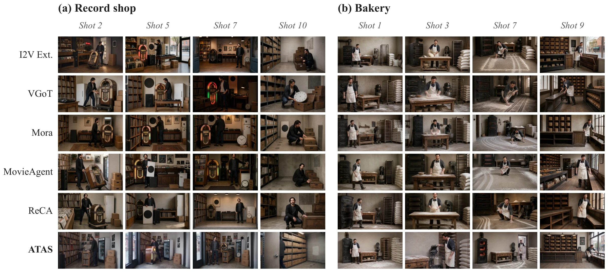
Fig. IQualitative baseline audit. Matched frames from the record-shop and bakery stories compare methods across shot continuation, scene layout, object state, and character consistency.
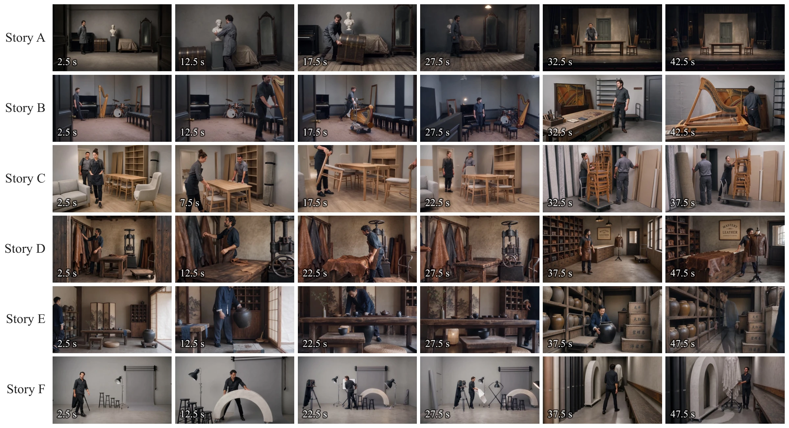
Fig. KRepresentative multi-story results. The grid shows timestamped frames from six stories, illustrating the range of scenes, actions, and camera requests used in the qualitative evaluation.
In Figure I each row is one method and each column one shot of the record-shop or bakery story, so reading along a row shows whether room layout, object placement, and character state are still in place after the shots in between. A frame can look plausible on its own while the layout or an object's state has drifted, which a single global similarity score does not capture. The ATAS row is the reference for the intended behavior. Figure K widens the view to six stories whose frames cover different interior spaces, people, objects, and camera patterns, so the behavior is not tied to one setting.
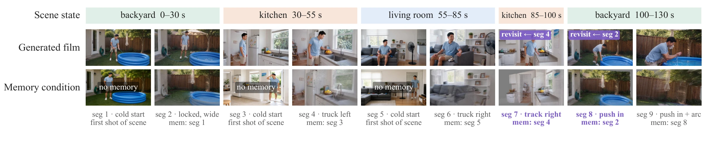
Fig. JRepresentative rollout timeline. The timeline follows the generated film and memory condition through scene changes, a spatial revisit, and an event recapture request.
Figure J has three rows: the scene that each stretch of film belongs to, the generated film, and the memory condition used for each segment. The first segment in a new scene starts without memory, and the following segments in the same scene are conditioned on a stored earlier segment. Near the end the film returns to the kitchen and then to the backyard, and both returns are conditioned on segments stored during the first visits. Read together, the rows show when a scene state is created, when a later request queries it, and when the returned observation is written back.